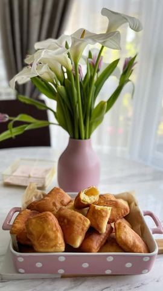

Moja beleška
SačuvanoSastojci
- Sastojci
Priprema
U manju posudicu odvojite suvi kvasac, kašičicu šećera, malo mlake vode i kašičicu brašna, promešajte pa ostavite da kvasac nadođe (10ak minuta) Potom sve sastojke sem brašna zajedno umešajte mikserom, pa brašno postepeno dodajte muteći, a možete umesiti i ručno. Mekano testo prebacite u drugu nauljenu posudu i pokrijte krpom, pa mu dajte nekih pola sata da narasta. Za to vreme taman pospremite sto i pripremite neke lepe namaze (mi ih uvek jedemo i u slanoj i u slatkoj varijanti) Testo razvucite, pa možete sekačem za pizzu iseći na neki oblik užeg pravougaonika (tako moja mama 😍) a ja sam sada samo želela da isprobam neke kalupice, ali mislim da ću ih ostaviti za pripreme keksića 😌 Pržite ih u ulju, pa ostavljajte u činiji koju ste obložili ubrusom.
Originalni opis sa Instagrama
Mamine piroške 😍😍😍 Oni najjednostavniji recepti, od sastojaka koje mahom imamo u kući, uvek su zgodni za pripreme. Brze uštipke sa jogurtom ste baš zavoleli i pripremali, sigurna sam da će vas i ove poroške oduševiti. Mekane, mirisne, šupljikave. 😍 Sastojci: •2 jaja •100 ml mlake vode •125 ml jogurta •50 ml ulja •1/2 suvog kvasca •puna kašičica praška za pecivo •1 kašičica šećera •1 kašičica soli •oko 550 gr mekog brašna U manju posudicu odvojite suvi kvasac, kašičicu šećera, malo mlake vode i kašičicu brašna, promešajte pa ostavite da kvasac nadođe (10ak minuta) Potom sve sastojke sem brašna zajedno umešajte mikserom, pa brašno postepeno dodajte muteći, a možete umesiti i ručno. Mekano testo prebacite u drugu nauljenu posudu i pokrijte krpom, pa mu dajte nekih pola sata da narasta. Za to vreme taman pospremite sto i pripremite neke lepe namaze (mi ih uvek jedemo i u slanoj i u slatkoj varijanti) Testo razvucite, pa možete sekačem za pizzu iseći na neki oblik užeg pravougaonika (tako moja mama 😍) a ja sam sada samo želela da isprobam neke kalupice, ali mislim da ću ih ostaviti za pripreme keksića 😌 Pržite ih u ulju, pa ostavljajte u činiji koju ste obložili ubrusom. Uživajte u vikendu, • • • #dorucak #idejezadorucak #piroske #maminirecepti #slanirecepti #slanisi #ukusnirecepti #ukusnoibrzo #subota #subotajutro #mirisdetinjstva